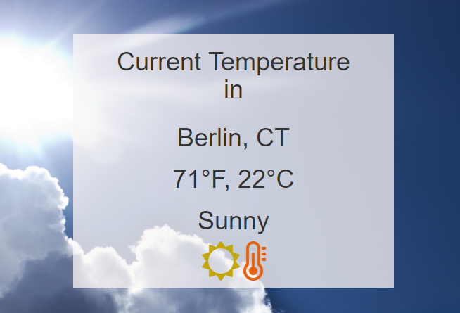

<!--Completed Projects Section-->

	<template id="completed-projects">			
		<div class="row">
			<div class="text-center">
				<span class="section-header">Completed Projects</span>
			</div>
			<div class="projects-summary text-center">
				These projects are functional. There is always a chance that I will go back and improve the code with better techniques but for now, they serve their purpose. 
			</div>
		</div>
		<div class="row">
			<div class="col-xs-12 text-center">
				<button class="btn" id="view-in-progress">
					<span class="project-section">View Ongoing Projects</span>
				</button>
			</div>
		</div>
		<div class="row text-center project-row">					   
			<div class="col-md-6 project">
				<span class="name">Weather App</span><br>
				
			</div>
			<div class="col-md-6 project">
				<span class="name">Weather App</span><br>
				
			</div>
			<div class="col-md-6 project">
				<span class="name">Weather App</span><br>
				
			</div>
		</div>
	</template>
